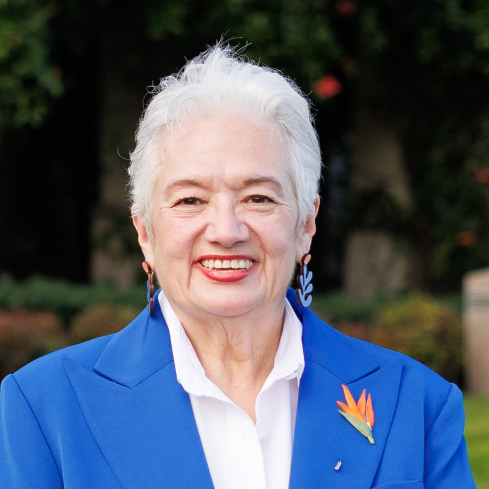

The Cantus-Medina Campaign is endorsed by many wonderful people.
Susan Sonne - Mayor of Buena Park
"I've seen by his actions that Jacob Cantus is the candidate who will unify us. That's why I wholeheartedly endorse Jacob Cantus for President of the United States."
Nancy Kaser - Director of PCLC
"I wholeheartedly endorse Jacob Cantus for President of the United States. In a time when our nation is increasingly divided, Jacob stands out as a unifying force. His platform emphasizes the importance of coming together and encouraging dialogue that transcends the polarizing narratives perpetuated by news and social media. Jacob Cantus will lead us beyond labels and work toward solutions that reflect the diverse needs of all Americans."